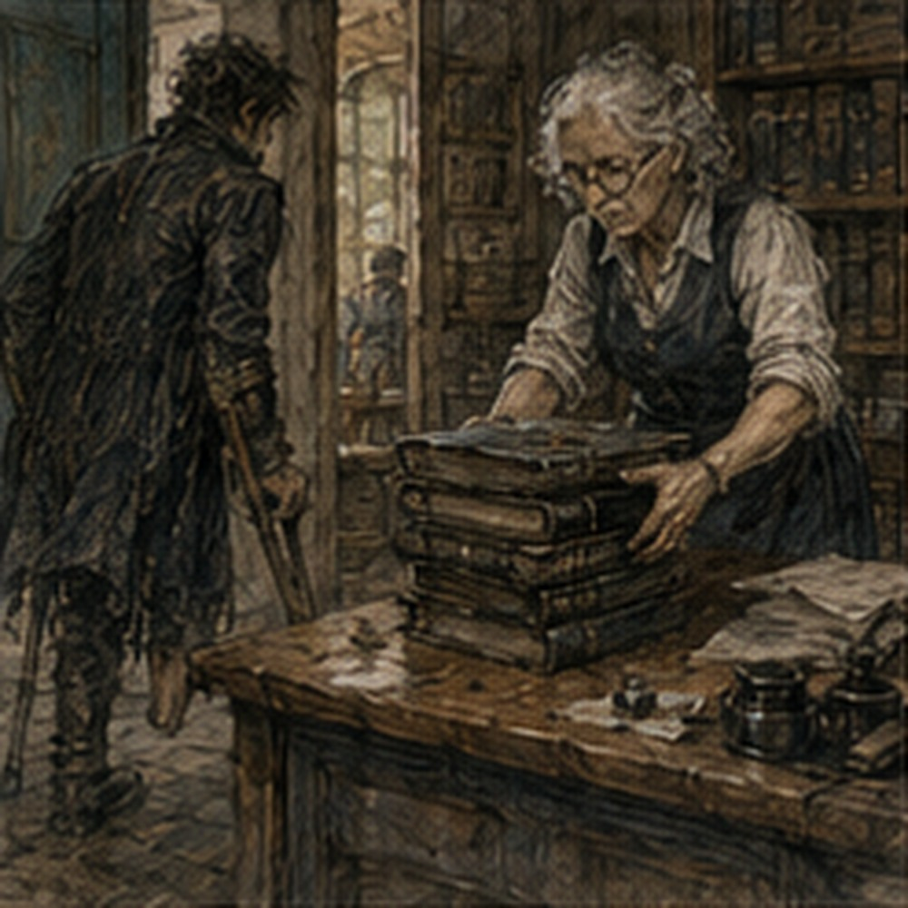

The rail creaked again. I was eating eggs. This mattered because I was not on the rail. Someone upstairs came down. Hand slid on ash. Creak. Step. No collapse. Good. The keeper looked at me.
“You're staring.”
“Lerris's third post.”
“What about it?”
“Creaks.”
“Wood.”
“Could be fastener.”
“Could be wood.”
“Could ask.”
“You can.”
There. Ask. Not inspect at midnight. Reasonable. I wrote LERRIS: THIRD POST CREAK on the edge of yesterday's Guild note. Then ate eggs. The archive offer sat beside the plate. Two hours. Three copper. Ground floor. Chair. Ledgers brought to table. Privy same floor. Unknown threshold. I had delayed answering until wound check. Good. Wound check was first.
Nerin came late enough that I had time to become irritated.
“Busy?” I asked when he arrived.
“Yes.”
“Unacceptable.”
“Other patients.”
“Fake.”
He put the satchel on table.
“Leg.”
“Still there.”
“Most of it.”
Medium. He unwrapped. Dry. No heat. No spreading redness. No new drainage. Swelling from Holl day had settled overnight. Not all. Enough. The incision looked less angry. Still not something I wanted to touch.
“Good,” Nerin said.
I pointed.
“Don't.”
He smiled.
“Margin viable. Swelling acceptable. Sera says ground-floor work fine if you keep it to the stated two hours and take the cart.”
“Stairs?”
“One controlled ascent later if you want and if swelling stays down.”
“Independent?”
“No.”
“Descent tomorrow?”
“Ask tomorrow.”
Of course.
“Archive?”
“Medical answer is yes under those conditions.”
“Not employer.”
“Learning.”
“Slowly.”
He wrapped.
“Hands.”
I showed him. Pressure spots pink, not broken.
“Keep wraps.”
“Lighter?”
“Fine.”
“Magic?”
“No.”
“I didn't ask.”
“You were thinking.”
Rude. He left. I looked at the archive slip. No referendum. Job. Did I want it? Three copper. Two hours. Seated. Guild archive. Honestly? Yes. Not because money. Not because proving. Old records. That was dangerous enough.
I sent the keeper's boy with answer:
YES.
WHAT IS THRESHOLD?
He returned twenty minutes later.
“Flat wood lip. About finger height.”
“Ramp?”
“No.”
“Door width?”
He stared. Stop. Finger-height lip. Crutches. Manageable.
“Tell them yes.”
“You already did.”
Right. Good.
*
The cart driver knew the Guild. Everyone knew Guild. He stopped at side entrance because records room was closer. I had not known there was a side entrance. Good. One shallow threshold. Not the same as records-room threshold. Fine. I cleared both. No event. The archive was colder than the hall. Stone walls. Shelves. Dust. Paper. Leather. Ink. A smell I liked immediately.
Dangerous. The clerk waiting for me was not yesterday's front-desk clerk. Woman maybe sixty. Silver hair braided tight. Ink on three fingers. No Guild cloak. Brown vest with too many pockets.
“You Gregory?”
“Unfortunately.”
She looked at the crutches.
“Chair's there.”
Excellent.
“I'm Merra.”
“Archivist?”
“Records keeper.”
Difference. Good.
“What am I comparing?”
She put two ledgers on table. Then a third.
“Dock transfer claims. Five years ago. South quay.”
I looked at her.
“Why?”
“Because one ledger says sixteen damaged crates reimbursed. One says fourteen. Payment register says fifteen.”
Excellent.
“Fraud?”
“Probably copying.”
“Probably.”
“Do not investigate fraud.”
“I wasn't.”
She looked at me.
“You were.”
Fair.
“What does Guild want?”
“Reconstruct what the records actually support. Mark disagreements. Do not invent missing facts.”
I liked Merra immediately.
“Who gets answer?”
“Claims clerk.”
“Current dispute?”
“No. Audit.”
“Why five years later?”
“New clerk found mismatch while consolidating old books.”
Ordinary. Good.
“Pay?”
“Three copper through front desk after.”
“Two hours?”
“If you're not done, stop.”
“Really?”
“Yes.”
“What if one line remains?”
“Then one line remains.”
Excellent woman. She gave me blotter, pencil, scrap. No ink.
“Why pencil?”
“You are not writing in archive books.”
Correct.
“Can I move ledgers?”
“On table.”
“Can I turn pages?”
She stared.
“Yes.”
“Good.”
“Do not lick finger.”
“I wasn't going to.”
“Everyone says that.”
I smiled.
*
Merra's desk sat where she could see the room without looking like she watched it. Probably deliberate. Two other people worked in the archive. A boy copying old membership rolls. A woman tying bundles of closed contracts with blue cord. Neither cared about me. Good. The copying boy sneezed every few minutes. Dust. No prophecy.
Merra shouted without looking up, “Cloth.” He wiped his nose with sleeve.
“Not that cloth.”
She threw a rag at him. Archive discipline. I liked this place. The shelves were labeled by year, then function, then something I did not understand. Claims. Transfers. Membership. Discipline. Equipment. Road. River. Insurance. Training. Death. The last one was a narrow shelf. I looked away. Not because leg. Because work. Merra caught me anyway.
“Don't browse.”
“I wasn't.”
“You were reading shelf labels.”
“Those are visible.”
“That's how browsing starts.”
Excellent.
“What happens if someone wants old record?”
“They ask.”
“And you find it.”
“Usually.”
“What if they don't know what they want?”
“Then they waste my morning.”
I smiled. The records were terrible. Not corrupt. Human. Dock ledger organized by date. Claims ledger by claimant. Payment register by payment date. Of course. Sixteen damaged crates appeared in dock ledger across four transfers. Claims ledger had fourteen because one claimant filed two transfers as one claim. Payment register had fifteen because one crate was denied. Maybe. Need evidence. Do not invent.
I made columns.
DATE.
TRANSFER.
DOCK DAMAGE COUNT.
CLAIM COUNT.
APPROVED COUNT.
PAID COUNT.
NOTES.
Merra walked past.
“Good.”
There. Everyone. I did not point. First transfer easy. Four damaged. Four claimed. Four approved. Four paid. Second. Six damaged. Six claimed. Five approved. Five paid.
Reason for denial in margin:
PRE-EXISTING SPLIT STAVE.
Good. Third. Three damaged. Claims ledger showed two. Why? One crate repaired on quay before claim?
Dock note:
1 REBOUND, RELEASED.
Did that mean damaged but not claimed. Probably. Mark. Do not invent. Fourth. Three damaged. Claims ledger two? Wait. Combined claimant. I traced. The claimant, Rellin & Sons, had two transfers same day. One north quay? No. South quay and warehouse return. Claims ledger merged line. This was why totals looked wrong. I liked this too much. Not important. Still. At forty minutes my residual limb started throbbing.
Chair too high. Of course. I asked Merra for second chair. She pointed with pencil. There was one behind shelf. I crutched six feet. Could not carry chair back. Right. Merra watched.
“Need it?”
“Yes.”
She carried it. No discussion. I put it sideways and supported left thigh. Better.
“Why not ask first?”
“I did.”
“You asked where.”
“Technicality.”
She returned to work. Excellent.
*
The first hour produced no mystery. That was good.
The mismatch came from three different counting questions:
damaged on dock,
claimed by owner,
approved by Guild. Sixteen. Fourteen. Fifteen? Wait. Approved total should? Four plus five plus? I recalculated. Dock sixteen. Claims fourteen? Payment fifteen impossible if payment counts crates. Maybe payment register entry was amount units, not crates. I looked at heading.
CLAIMS PAID.
Numbers. No unit. Danger.
“Merra.”
“What?”
“Payment register numbers. Crates or payment entries?”
She came over.
“Entries.”
There. Fuck.
“Then fifteen isn't crate count.”
“No.”
“Why did audit flag it?”
“New clerk assumed.”
“Ah.”
“Do not mock new clerk.”
“I didn't.”
“Face.”
Everyone. So fifteen payment entries. Could include split payments. I traced. Yes. One claim paid in two installments. Another two claims combined into one payment. The number fifteen had no direct relationship to crate count at all. Good. This was not solving fraud. This was labeling units.
I wrote:
PAYMENT REGISTER TOTAL IS NUMBER OF PAYMENT ENTRIES, NOT CRATES. NOT COMPARABLE DIRECTLY.
Then:
DOCK DAMAGE = 16 CRATES.
CLAIMS RECORD = 14 CLAIMED CRATES SUPPORTED.
DIFFERENCE APPEARS TO INCLUDE 1 REBOUND/RELEASED CRATE AND 1 RECORD MERGER REQUIRING LINE-BY-LINE RECONSTRUCTION.
Wait. Record merger did not remove crate. Need exact. I went back. No. The merged claim still counted two transfers but quantity line was five. Dock total across those transfers six? One crate denied? No. Claims quantity should six if claimed. Maybe missing one. Do not force. I crossed out sentence. Good. Merra noticed.
“Problem?”
“I was making record cleaner than it is.”
“Don't.”
“Yes.”
She went away. I liked her more.
*
A dispute from the same year involved six barrels of lamp oil that arrived two days late because a bridge approach had washed out. The claimant wanted storage fees. The carrier argued weather. Guild ruling split cost because route notice had been posted but dispatch happened before confirmation. Nobody won. Good. Another file involved a warehouse roof leak. Four sacks ruined. Owner blamed roof contractor.
Contractor blamed blocked drain. Guild note said drain blockage was bird nesting material and neither party had inspected after storm season. Cost split again. People had been arguing about hidden conditions forever. I stopped. No. Do not turn archive into accident theology. Roof. Birds. Sacks. Different. I kept moving.
A road contract showed a crew paid extra because a culvert collapsed after inspection. Different road. Different year. No Pessa. No lesson. The archive could make everything look like pattern if I let it. That was the danger. Enough records and every current event acquired ancestors. Some were relevant.
Most were just people repeatedly discovering that wood rotted, water moved, clerks copied badly, and customers complained. Normal civilization. At one hour twenty, I found a familiar name. Not important. Dorn. Dorn Tave? No. Just DORN, CARRIER. Could be him. Five years ago. Maybe. Transfer of lamp oil barrels. No damage. Not relevant. I stared anyway. People existed before me. Obvious.
Another name:
Marn. Different surname? Marn Kess. Could be Marn. Could be someone else. Do not make world tiny. I kept going.
Then:
ANTONIUS VALE CREDIT HOLD.
I stopped. Not current. Five years ago. Claimant had outstanding credit hold through Vale office. Payment redirected? No.
Margin note:
RELEASE AFTER VALE NOTICE.
Interesting. Antonius had business five years ago. Of course. How old was he? Not my problem. Could be family office. Name exact. Do not infer. I marked nothing because unrelated to crate counts. Good. The archive was full of tempting irrelevance. Dangerous place.
*
Merra brought tea. I had not asked.
“Two-hour workers get tea.”
“Policy?”
“My policy.”
“Best Guild policy.”
“Drink.”
I drank. Terrible. Everyone made terrible tea. Maybe tea was terrible. Possibility.
“Why archive?” I asked.
“What?”
“You.”
She looked around.
“Because records lie differently than people.”
I stopped.
“That sounds philosophical.”
“It means people forget what columns mean.”
Better.
“Were you always records?”
“No. Claims desk. Then dock clerk. Then this.”
“Promotion?”
“Escape.”
Excellent.
“How long?”
“Eleven years.”
“You know where everything is?”
“No.”
Good answer.
“Then how?”
“I know where it should be.”
Even better.
“And when not?”
“I swear.”
Professional method.
*
At one hour forty-five, I had a defensible comparison. Not complete certainty. Defensible. Dock ledger supported sixteen crates marked damaged at initial handling. Claims ledger clearly supported thirteen crates claimed, plus one merged line whose underlying crate quantity could not be reconstructed from the claim book alone.
So fourteen was a ledger total, but one component ambiguous in meaning. Payment register's fifteen was fifteen payment entries, not crate quantity, and should not have been compared directly. One dock-damaged crate was explicitly rebound and released without claim. One damaged crate was denied for pre-existing stave split. But whether that denied crate was inside the claims total? Yes. Claims ledger showed it.
Good. I wrote summary. Merra read over shoulder.
“Too much.”
“What?”
“First paragraph.”
I looked. I had explained column structure.
“Needed.”
“Claims clerk knows books.”
“New clerk didn't know payment units.”
“Fair.”
She crossed one sentence anyway. Rude.
“Can you do that?”
“It's my archive.”
Not my report yet. Fine. She pointed.
“Say what is comparable first.”
I rewrote.
DOCK AND CLAIMS LEDGERS CAN BE COMPARED BY CRATE QUANTITY WITH CAUTION.
PAYMENT REGISTER CANNOT BE COMPARED BY CRATE QUANTITY BECAUSE ITS NUMBERS COUNT PAYMENT ENTRIES.
Better. Then details. At exactly two hours Merra took pencil from my hand.
“I had one line.”
“No.”
“Five minutes.”
“No.”
“Three.”
“Job says two.”
I stared. She stared. Fine. I liked her less. Maybe more. She signed work slip.
“Come back if claims clerk asks follow-up.”
“Paid?”
“Front desk.”
“Will they ask?”
“Probably.”
“Do I reserve time?”
“No.”
Excellent.
*
The front desk clerk handed me three copper and a receipt. I signed.
“Archive?”
“Yes.”
“Merra?”
“Yes.”
He winced.
“She's terrifying.”
“She has tea.”
“That doesn't help.”
“It does.”
He looked at my crutches.
“Similar work okay?”

There. Not job offer. Preference.
“Ask.”
“Still.”
“Yes.”
“What about longer?”
“How long?”
“Half day.”
“No.”
Immediate. Good.
“Three hours?”
“Ask.”
“Standing?”
“No.”
“Some walking?”
“Ask.”
He nodded and wrote something. I leaned.
“What are you writing?”
“Ask Gregory. Do not reserve. Seated preferred. Duration ask.”
That was almost a profile. Not program. Useful.
“Don't write disabled.”
He looked offended.
“I didn't.”
Right. I had supplied problem.
“Fine.”
“Anything else?”
“No.”
I moved away before adding twenty conditions. I had lunch at Guild because cart back was not for another half hour. Soup. Bread. One apple. No work. Front clerk paid three copper. Archive job had cost transport. Again. I did not calculate. Growth. No. I was hungry. I ate.
The contract board was visible from table. I watched people take jobs. A Copper woman took canal tally. A Bronze man argued about night-watch rate. Two young men wanted same courier posting. Clerk gave it to one because the other had missed prior return deadline. Systems. Normal. Nobody asked me. Good. Then the claims clerk came over. Young man. Probably the one who had flagged fifteen.
He looked embarrassed.
“Gregory?”
“Yes.”
“Merra says payment register isn't crate count.”
“Yes.”
“I thought number was quantity.”
“Heading is bad.”
He looked relieved.
“It is?”
“Yes.”
“Merra said I should know.”
“Merra has eleven years.”
“How do you know?”
“I asked.”
He smiled.
“Can you show me merged claim issue tomorrow?”
There. Follow-up.
“Maybe.”
His face fell slightly.
“Wound check and stairs.”
“Oh.”
Not pity. Logistics.
“Ask front desk. Don't reserve.”
He nodded. Carrow had learned phrase. Terrible.
*
Outside Guild, I had twenty minutes before cart. Holl was not far. No. Holl had data to gather. Pell?
WE KNOW. DO NOT COME.
Green door? Wrong direction. I sat on bench. Did nothing. A pigeon tried to steal bread crumb from my boot. Right boot. I moved foot. It followed.
“Fuck off.”
Pigeon did not respect authority. Good.
*
Back at lodging, Lerris was there. Of course. Keeper had asked about creak. Good. I had forgotten. He tightened one fastener at third post.
“Loose?”
“Settled.”
“Difference?”
“Wood compressed around fixing.”
“Danger?”
“No.”
“Could have become?”
“Eventually maybe.”
There. Ask. Local fix. No midnight structural audit. Good.
“How much?”
“Nothing.”
“Why?”
“My work.”
Good. He left. The rail stopped creaking. Satisfying.
*
The keeper had moved the scarf off the rail.
“Why?”
“Needed scarf.”
“Good.”
“What?”
“Nothing.”
I tested third post with one hand. Solid. No creak. Lerris's local fix had worked. I did not test the others. Excellent restraint. Then I noticed the bottom post had a dark smear. Hand oil. Already. People using it. Building. Good. I wanted to go upstairs before fatigue increased. Not immediately. Food first. Water. Ten minutes sitting.
The temptation was to treat stair ascent like a task to complete before body changed its mind. That was how deadlines got invented. No deadline. I waited. Swelling after archive was modest. Less than Holl day. Two hours seated, less workshop movement. Cart both ways. I could attempt one controlled ascent. Did I want to? My room. Yes. Keeper spotted. Just stairs.
Fourteen. Slow. Right leg. Rail. Crutch. Landing. Phantom foot tried once. I stopped. Turned in pieces. Two more. Up. Hard. Not catastrophic. At top I needed bed. Fine. Keeper brought dinner later. Chamber pot returned. Trade. Normal enough.
*
My brown notebook was upstairs. Good. I copied archive summary because I liked it. Not Guild details. Method.
COMPARE UNITS BEFORE TOTALS.
Then stopped. That sounded like slogan. Crossed out.
Wrote:
DOCK = DAMAGED CRATES.
CLAIMS = CLAIMED CRATES.
PAYMENT = PAYMENT ENTRIES.
Facts. Better.
Under Holl notes:
TEST OUTPUT MUST MATCH DECISION UNIT.
Almost slogan. I stared. Could be useful. Crossed out MUST.
Wrote:
HOLL DECISION = BAND / ACCEPT / TEST MORE.
NOT EXACT VALUE.
Good. No universal law.
*
Jorren came late. He shouted from below.
“Up?”
“Yes.”
“Fuck that.”
He did not climb. Fair. I crutched to doorway. We talked across stairwell. Ridiculous.
“How was work?”
“Dusty.”
“Archive?”
“Yes.”
“Find treasure?”
“Bad headings.”
“Same.”
“What?”
“Work.”
He had spent day reconciling grain invoices where one warehouse counted sacks and another counted weight. I stared.
“Units.”
“Yes.”
“Everyone.”
“What?”
“Nothing.”
He told me one clerk had written 40 under a column with no heading.
“What was forty?”
“No one knows.”
Excellent.
“Could be sacks.”
“Could be weight.”
“Forty pounds grain is tiny.”
“Could be silver.”
“Then exciting.”
“Wasn't.”
We laughed. Ordinary clerical incompetence connected civilization. Good.
“Green door tomorrow?” he asked.
“Maybe.”
He groaned. I smiled.
*
I slept upstairs. Phantom foot cold. Not burning. Cold. Blanket did nothing. I knew it would not. Still pulled blanket higher. Human. No magic. No experiment. Eventually slept.
*
Morning wound check was at Guild. Which meant descent. Controlled. Keeper spot. Harder than ascent. Still. I sat once near step eight. Not failure. Technique. Down. Cart. Nerin. Wound still dry. Swelling down. No heat. No redness.
“Good.”
I let him say it. Progress.
“Stairs?”
“One trip each direction every other day for now unless Sera changes.”
“Independent?”
“Not yet.”
“Spotter?”
“Yes.”
Fine.
“Archive follow-up?”
“Ground floor?”
“Yes.”
“Two hours?”
“Probably less.”
“Fine.”
There. I accepted. Not because needed. Because I wanted to finish the comparison. Maybe that was work. Probably.
*
The claims clerk had three additional papers ready. Merra had already pulled them. Of course. One was the original claimant notice for the merged line. It resolved one ambiguity. Not all. The merged claim covered five crates from one transfer and one from another. Six.
Claims ledger line quantity five because second transfer had been entered separately under a shortened claimant name. There. Fourteen ledger total had double organizational weirdness. Actual claimed crates fifteen? I calculated. Yes. Dock damaged sixteen. One rebound/released without claim. Fifteen claimed. One denied. Fourteen approved.
Payment entries fifteen because split and combined payments happened to net same number by coincidence. There.
The original audit had accidentally compared three totals that looked related:
16 damaged.
14 approved.
15 payment entries. And the claims ledger's visible total of 14 had been wrong as a claimed-crate total because of duplicate naming/organization. Messy. Human. No fraud. Could still be fraud somewhere. Not here. I wrote. Merra read. Claims clerk read.
“Can we fix old ledger?”
he asked.
“No,” Merra said.
“Why?”
“Record is record.”
“Add note?”
“Yes.”
Good. He wrote cross-reference. Archive improved without rewriting history. I liked that. Too much.
*
The follow-up took forty minutes. Pay? No additional pay. Same job completion clarification. Fine. I had agreed. Claims clerk thanked me. Merra said, “You're annoying but readable.” Highest praise.
“Can I come back?”
“Why?”
“Archive.”
“No.”
I laughed. She almost did.
“Unless work.”
“Fine.”
Boundaries. Good.
*
At front desk, no new job. Good. Edrin had left a note. Not investigation details.
One line:
YOUR CATEGORICAL TOLERANCE POINT WAS USEFUL. NOTHING FOR YOU YET.
I read it twice. Nothing for you yet. Good. Not needed. Useful. Separate. I put note in pocket. No chase.
*
Outside, the city smelled like rain. Clouds over river. Cart due in ten. I could wait. I did. Alden crossed street carrying practice spear. Saw me.
“Just Greg!”
He came over. Sweaty.
“Pessa?”
“Won once.”
“Out of?”
“Six.”
“Excellent.”
“Fuck you.”
“What changed?”
“Shorter first step.”
I looked at him. He pointed spear.
“Don't.”
“I didn't say anything.”
“You were going to.”
“Maybe.”
He grinned.
“Come watch tomorrow?”
There. I wanted to. Field? Stairs? Transport? Standing? Could sit. Ask.
“Where?”
“South training yard.”
“Ground?”
“Packed dirt.”
“Chair?”
“No.”
“Bring one?”
“Yes.”
“Time?”
“Third bell.”
“Maybe.”
He groaned. Everyone.
“Ask me tomorrow morning.”
“Fine.”
He left. Independent. Good.
*
Cart arrived. I went home. The archive job was finished. Holl was gathering data. Edrin had nothing for me. Pell and Vessa did not need me. Alden might want me to watch. Not train. Watch.
Jorren might go green door. My room was upstairs under conditions. Storage room downstairs under conditions. No grand direction. Several small ones. This felt more like a life than a plan. Dangerous sentence. I crossed it out mentally. Before going inside, I asked the driver to wait while I stood at curb. Not because I needed him. Because rain had started. Light.
Street darkening. People moved faster. A boy covered bread basket with cloth. A woman shouted for laundry. The city changed behavior around weather without holding a meeting. I watched for maybe thirty seconds. Then driver said, “You getting out?”
“Yes.”
Right. Crutches. Right foot. Door. Inside. No metaphor. Wet. At lodging, the keeper had stew. I paid. She asked how archive ended.
“Sixteen damaged. Fifteen claimed. Fourteen approved. Fifteen payment entries.”
“That makes no sense.”
“Exactly.”
She put bowl down.
“Eat.”
I did. That made sense.